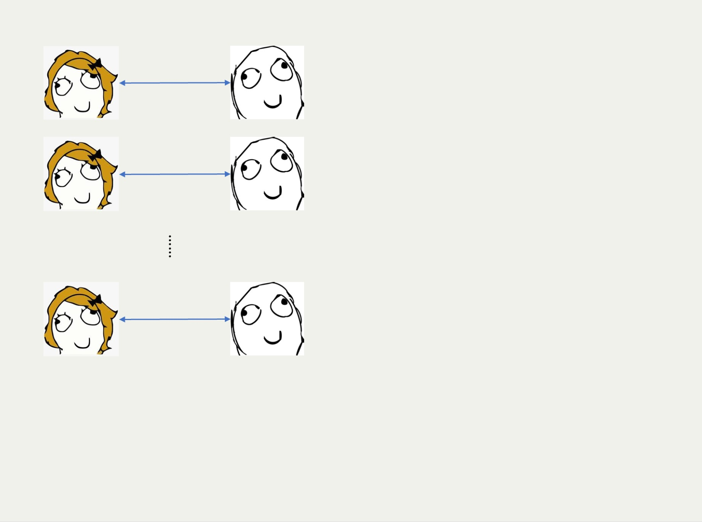
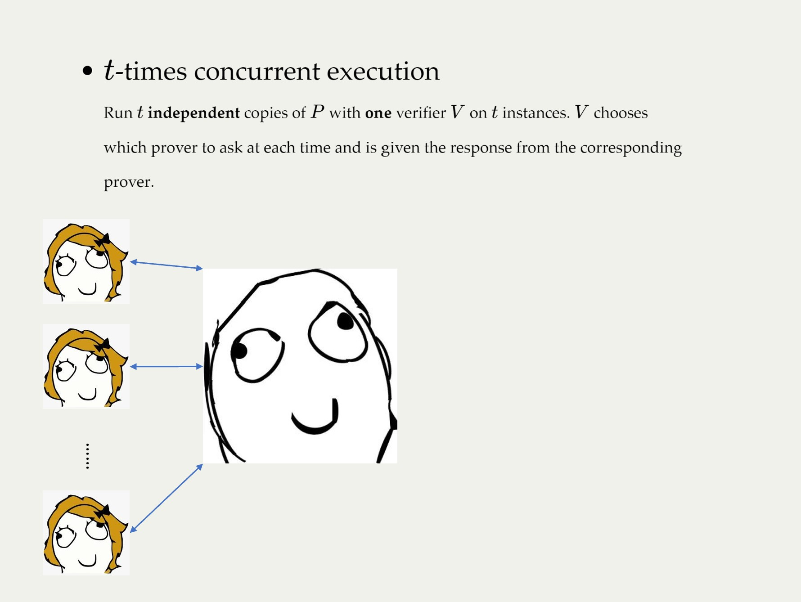
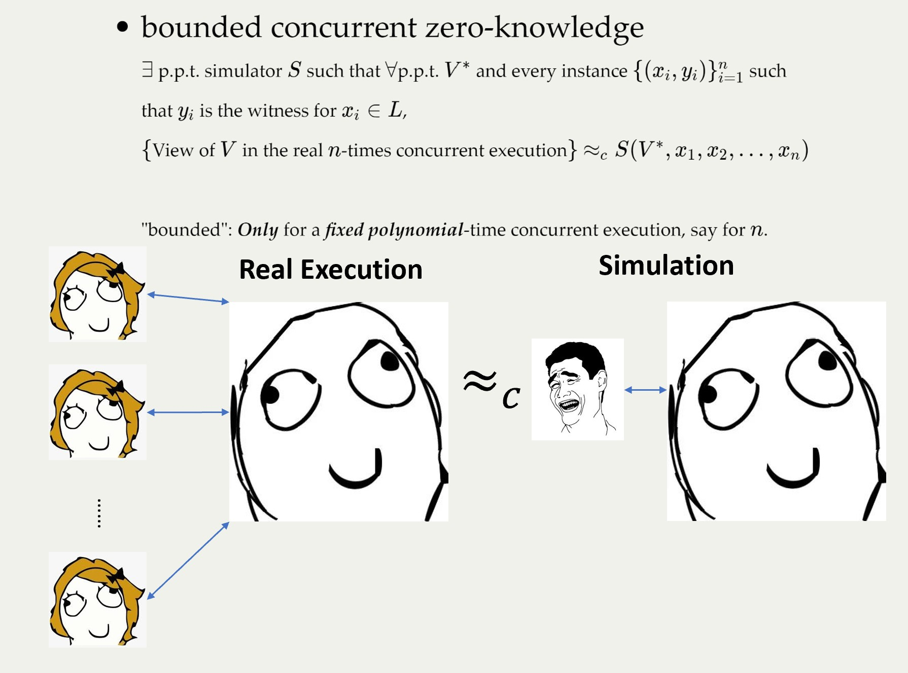
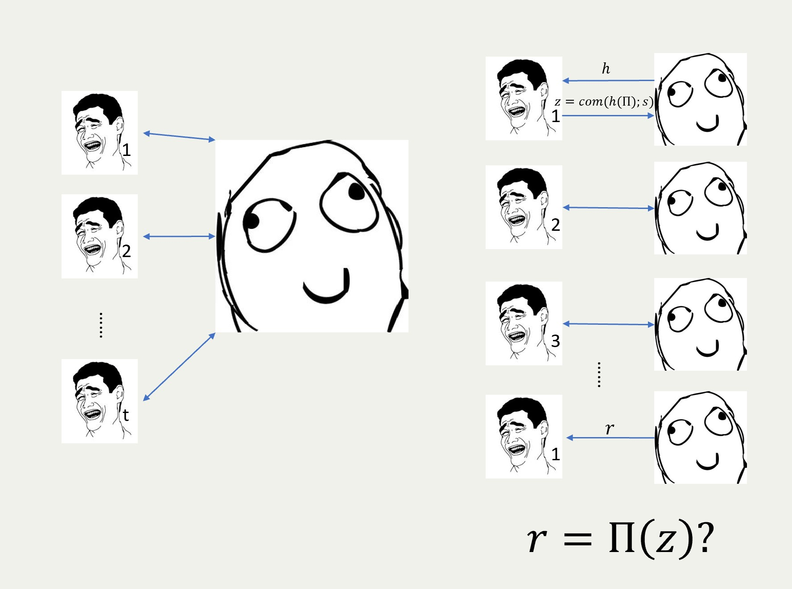

Review: How to go beyond the black-box simulation barrier
Zihan Hu, Kai Su, Shiyu Zhao
Recap
- Zero-knowledge
There exists a probabilistic polynomial-time simulator S such that for every polynomial-sized circuit family {VN∗}n∈N and every sequence {(xn,yn)}n∈N, where xn∈{0,1}n∩L and (xn,yn)∈R, we have
{viewVn∗⟨P(xn,yn),Vn∗(xn)⟩}n∈N≈C{S(Vn∗,xn)}
General Idea
Key point of simulator
- Challenge
- convince verifier without witness
- Advantages
- have access to random tape of verifier,
predict next question to ask - retry when it fails (called rewinding technique)
- have access to random tape of verifier,
Why non-black-box
blackbox = verifier as an oracle
non-black-box = code of verifier
- Control randomness?
verifier can hide randomness into algorithm (PRF, hash function)- random, uncontrollable if it's black-box
- Reverse-engineering is hard and code can be well-obfuscated
still random, still uncontrollable even when it's non-black-box
- Rewinding(all zero-knowledge protocols)
1. NO constant-round zero-knowledge proof in con-current composition
2. NO constant-round zero-knowledge proof in strict polynomial time
Why non-black-box
-
Rewinding
''easy question'': The questions simulator can output answer successfully
Rewinding is just to find the ''easy question''
-
Key idea!
What about modifying the definition of ''easy question''?
''easy question'' = ''what the verifier asks''
So it can be trivially answered -
How?
FLS technique!
FLS Zero-Knowledge Argument
FLS technique
- Idea
a framework that allows using trapdoor information to cheat the verifier while verifier does not know it is cheated
- let trapdoor information to be the question verifier asks
⇒ Knowing what the verifier asks is enough to convince/cheat the verifier
⇔''easy question'' is just ''what the verifier asks'' as desired
- Role of description: to define the ''easy question'' to be what the verifier asks
- let trapdoor information to be the question verifier asks
FLS technique
- Idea
- Witness-indistinguishable
Let L = L(R) be some language and let (P, V) be an interactive argument for L. We say that (P, V) is witness-indistinguishable if for every polynomial-sized circuit family {Vn∗}n∈N and every sequence (xn,yn,yn′)n∈N, where xn∈{0,1}n and (xn,yn),(xn,yn′)∈R , we have
{viewVn∗⟨P(xn,yn),Vn∗(xn)⟩}n∈N≈C{viewVn∗⟨P(xn,yn′),Vn∗(xn)⟩}n∈N- Let the view of proving with witness for x and witness for trapdoor be indistinguishable ⇒ verifier does not know it's cheated
FLS-type zero-knowledge protocol

Notice: In WI proof, ⟨x,τ⟩∈L′ if either x∈L or τ∈Λ


Game #1: Bob wins if he outputs some “random” string.
ProverrVerifierM:a TM that outputs rΛ={r:∃M,∣M∣<2∣r∣,M()=r in ∣r∣loglog∣r∣}

Game #2: Bob wins if:
he has a different output from the program sent by Alice.
ProverzProverrVerifierVerifierΛ={(z,r):∃(s,Π),Com(Π;s)=z,Π(z)=r in ∣r∣loglog∣r∣}
Non-Uniform Verifier


Game #3: Bob wins if:
he has a different output from the program
whose hash is sent by Alice.
ProverhProverzProverrVerifierVerifierVerifierΛ={(h,z,r):∃(s,Π),Com(h(Π);s)=z,Π(z)=r in ∣r∣loglog∣r∣}
Sometimes prover proves related statements simultaneously...




ProverhProverzProverrVerifierVerifierVerifier
Non-uniform case
Λ={(h,z,r):∃(s,Π),Com(h(Π);s)=z,Π(z)=r in ∣r∣loglog∣r∣}
↓
Bounded concurrent zero-knowledge case
Λ={(h,z,r):∃(s,Π,y),Com(h(Π);s)=z,Π(z,y)=r in ∣r∣loglog∣r∣}
Proof Sketch
Λ={(h,z,r)∣∃(s,Π,y),Com(h(Π);s)=z,Π(z,y)=r in ∣r∣loglog∣r∣}
- Simulator: two parts
-
SGenProt generates the view of generation protocol (the first stage) and the trapdoor information (s,Π,y) along with (h,z,r)
-
SWI generates the view of witness indistinguishable universal argument (the second stage)
-
-
Completeness (trivial)
-
Soundness
Proof Sketch (Cont'd)
Λ={(h,z,r)∣∃(s,Π,y),Com(h(Π);s)=z,Π(z,y)=r in ∣r∣loglog∣r∣}
-
Simulator
-
Completeness (trivial)
-
Soundness
If verifier will be convinced with non-negligible probability for random r,
consider random r=r′,
Com(h(Π);s)=z,Π(z,y)=r, Com(h(Π′);s′)=z,Π′(z,y′)=r′
⇒h(Π)=h(Π′), if ∣y∣<2∣r∣, Π=Π′
Non-uniform case
Λ={(h,z,r)∣∃(s,Π),Com(h(Π);s)=z,Π(z)=r in ∣r∣loglog∣r∣}
↓
Bounded concurrent zero-knowledge case
Λ={(h,z,r)∣∃(s,Π,y),∣y∣<2∣r∣,Com(h(Π);s)=z,Π(z,y)=r in ∣r∣loglog∣r∣}
Summary
Assuming the existence of CRH (against some adversaries), there is a zero-knowledge argument system for NP satisfying the following properties:
- negligible soundness error
- for non-uniform V∗
- constant rounds and public coin
- bounded concurrent zero-knowledge
- strict polynomial time simulator
Subsequent work
why we need CRH against a super polynomial adversary?
Subsequent work
why we need CRH against a super polynomial adversary?
based on more standard assumption?
[BG01] Suppose CRH against polynomial-sized adversary exists, universal argument and witness-indistinguishable universal argument exist. Furthermore, these proof systems are of public coin type and use a constant number of rounds.
Proof Sketch
-
universal argument: via PCP
-
+ witness indistinguishable: via concurrent execution of "encrypt" version of universal argument + constant error soundness zero-knowledge proof
-
how to use in this work:
- hope that a random bit is different (via error correcting code)
- hope that we can decommit to a single bit (via tree commitment)
Future directions
-
Non-black-box proofs of security
-
Black box reduction and non-black box reduction
-
Arguments vs. proof
-
Fiat-Shamir heuristic